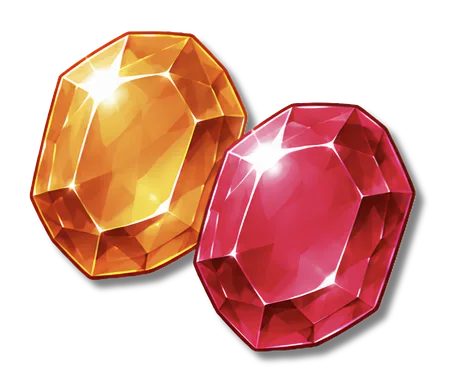
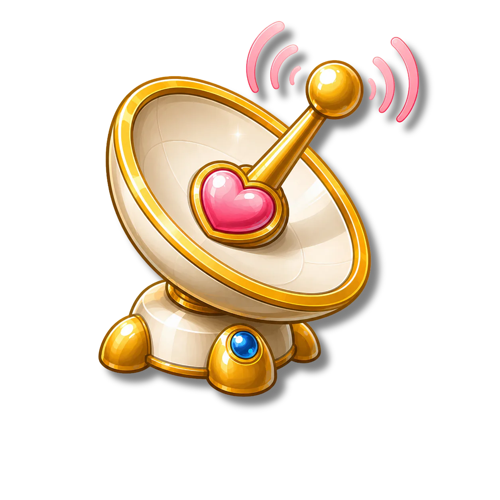
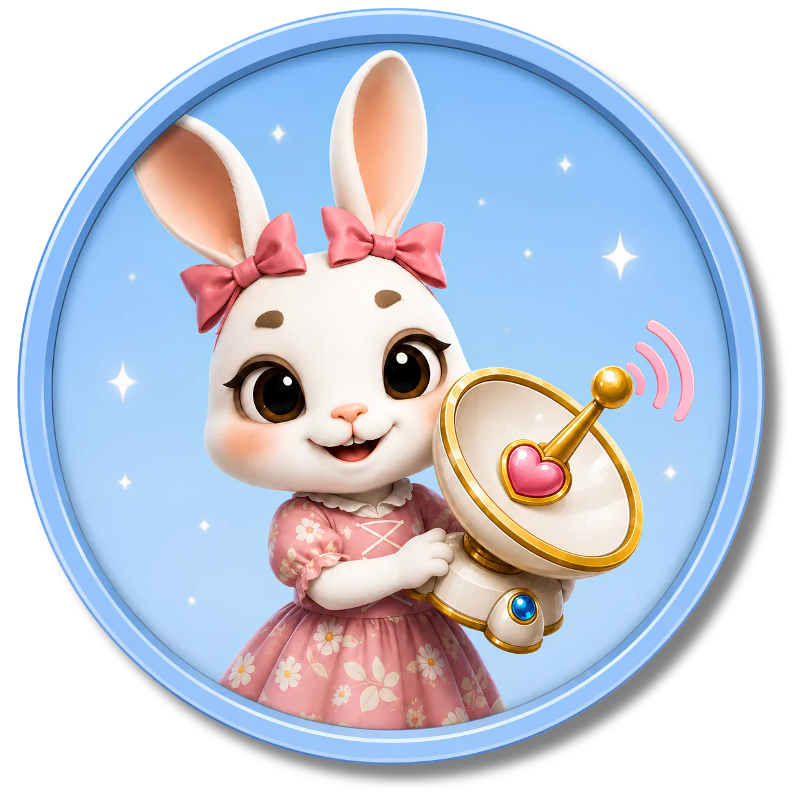

얼음 행성 주민의 마음이 꽁꽁 얼어붙었어! 주민들은 서로의 이야기를 듣지 않고 마음도 전하지 못해서 따뜻한 공감이 사라졌어. 따뜻한 말과 행동으로 얼어붙은 마음을 녹여 보자!
- ⭐ 친구의 이야기를 끝까지 귀 기울여 듣고, 적절하게 반응한다.
- ⭐ 상황에 맞는 따뜻한 말과 행동으로 공감을 표현한다.
-

경청의 토파즈 / 표현의 루비 세번째 얼음 행성의 공감 원석이예요. -

공감 송신기 공감을 말과 행동으로 전할 수 있어요 -
 공감 에너지 공감 에너지를 모아 하트 커넥트를 복구 할 수 있어요.
공감 에너지 공감 에너지를 모아 하트 커넥트를 복구 할 수 있어요.

얼어붙은 마음을 녹여라!
따뜻한 말과 행동으로 얼어붙은 친구의 마음을 녹여 보세요!
- 1 가디언즈 작전회의
- 2 공감 송신기 연료 채우기
- 3 얼어붙은 마음 녹이기